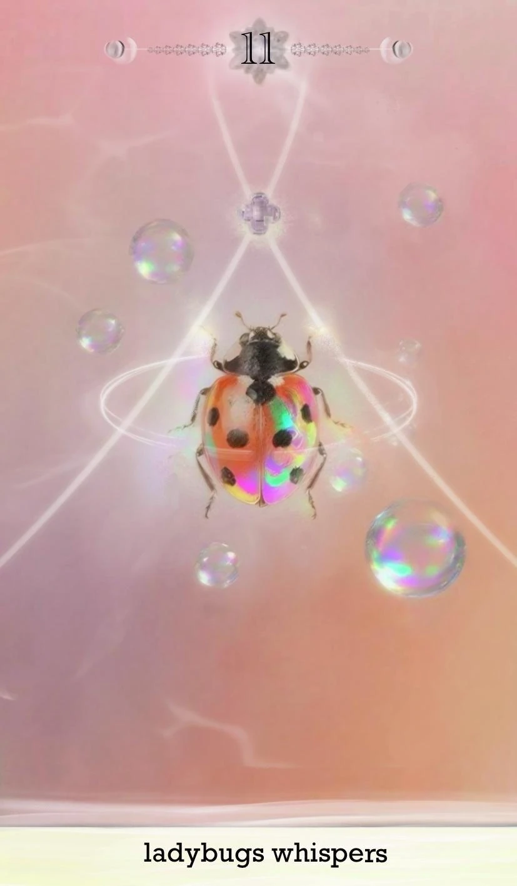

In several sessions, a first affective response remained recognizable even when its verbal explanation changed.
04 / INTERPRETATION · STUDY 0 · EXPLORATORY PILOT · 2026
Before You Know
AI-Mediated Interpretation of Ambiguous Visual Stimuli
What happens when AI enters before an interpretation has fully settled?
Study 0 follows what happens after a person has an initial feeling, then receives contextual information that may challenge what the image seemed to say.
How does AI shape what people do with an interpretation once their first reading has become uncertain? These questions guide an exploratory pilot; they are not yet answered.
Ambiguous perception / Context / Human–AI interaction / Interpretive agency
Pilot underway Working coding snapshot · 29 September 2026
A SHARED VISUAL STARTING POINT
The same image can feel different once it has a story.
Ambiguous oracle-style cards provide a common visual prompt. The cards are not diagnostic tools and have no single correct interpretation. This example also appears in one of the anonymized pathways below.

THE FIRST INTERVENTION
The booklet can unsettle the first reading before AI enters.
01IMAGE
→An initial feeling or interpretation forms without contextual framing.
02BOOKLET
→Written context offers a frame that may conflict with the image or the participant’s experience.
03UNCERTAINTY / REINTERPRETATION
The image remains visible, but the meaning attached to it is less settled.
The booklet is the first major destabilizing intervention: before AI appears, its written frame can make participants reconsider what an image seems to show—or reject the text against what they see and feel.
STUDY 0 / SEQUENCE
Four stages. More than one possible source of change.
- 01Initial response
The participant encounters the image and records an initial impression.
- 02Contextual booklet
Written material introduces a second frame before AI enters.
- 03AI dialogue
The participant verifies, explores, clarifies, or questions aspects of the reading.
- 04Reflection
The participant revisits what stayed, shifted, or became more certain.
Because the booklet, AI dialogue, repeated viewing, and reflection occur in sequence, this pilot cannot isolate the causal contribution of AI.
WHAT THE PILOT IS REVEALING
Interpretation, feeling, and confidence do not always move together.
Context could unsettle an initial reading. Participants sometimes tried to reread the image through the booklet, and sometimes rejected the connection.
Some participants sought confirmation that their reading was reasonable. Others used AI to examine alternatives or clarify what they did not accept.
AI often seemed to make a participant’s existing assumptions, doubts, and feelings easier to name. That is an emerging interpretation of these sessions, not a general finding.
A person’s confidence in an initial feeling could rise even when the AI was not experienced as useful for generating meaning. A confidence rating alone does not tell us what caused the change.
When participants chose to explore alternatives, I observed exchanges that felt relatively safe and productive. This is my field observation, not a measured outcome or a claim about every participant.
WHAT DID THE AI DO?
Participants used the dialogue in different ways.
In my current reading of these sessions, AI often acts as a mirror: it helps people articulate, test, or strengthen an interpretation they already have. For participants who want to explore, it can also help widen that interpretation.
Verify
Check whether an initial interpretation feels reasonable.
Explore
Consider alternative meanings or overlooked cues.
Clarify
Examine a point that feels difficult to accept.
Reflect
Trace how an initial response may have formed.
In the current pilot, AI often behaved less like an answer machine and more like a mirror for a developing interpretation. This remains a working account, not a conclusion about AI in general.
INTERPRETIVE AGENCY
Keeping an interpretation can be an active choice.
Interpretive agency does not require changing one’s first reading. It may involve recognizing, questioning, retaining, expanding, revising, or leaving an interpretation unresolved.
Changing an interpretation is not automatically an improvement. Retaining an initial feeling is not a failure. This study asks how a person relates to an interpretation—and how AI takes part in that process.
01FEELING
What the image evokes
02INTERPRETATION
What the image may mean
03CONFIDENCE
How much the participant trusts their own reading
BOOKLET / SCORPION CARD · P02–T1
Danger and care held in the same frame.
The study booklet entry is shown in English and Chinese. The Chinese text below is a translation of the English source provided for this card.
English source
Scorpions are a contradiction where danger and motherhood coexist.
Beneath the Pincers and Tail: It usually lurks quietly in rock crevices, sand, or fallen leaves, maintaining a low-profile form like an inconspicuous dead leaf or gravel. But once it raises its pincers and arches its venomous tail, it instantly becomes a terrifying hunter. This symbolizes that “beneath silent forbearance lies lethal power and explosive strength.”
Phototaxis and Bioluminescence: Scorpions are mostly nocturnal, preferring dark, dry corners to avoid bright light. Interestingly, its exoskeleton fluoresces under ultraviolet light, like a faint green lantern in the dark. In ancient Egyptian mythology, the scorpion goddess Serket protected both poison and medicine; in folklore, it is often seen as a symbol of death and revenge. It is like a “phantom in the dark,” both frightening and mesmerizing.
Within the Venom: A scorpion’s venom can paralyze prey and defend against natural enemies, while also being studied in medicine for drug development. Meanwhile, a mother scorpion carries her young on her back until they become independent, revealing a rare tenderness beneath her cold exterior. It is both a predator and a mother; it brings death, yet safeguards new life. This reveals the law where “poison and love, killing and nurturing are intertwined with one another.”
Therefore, a scorpion is not just a terrifying venomous creature; it is more of a metaphor for nature: beneath a lethal exterior, tenderness may still exist; in the dark corners, protection and new life may also be hidden.
中文译文
蝎子是一个危险与母性并存的矛盾体。
钳与尾之下：它通常静静潜伏在岩缝、沙地或落叶间，低调得像不起眼的枯叶或碎石。但当它举起双钳、弓起带毒的尾部，便会瞬间成为令人畏惧的猎手。这象征着“沉默的隐忍之下，潜藏着致命的力量与爆发力”。
避光与生物荧光：蝎子大多夜行，偏爱黑暗、干燥的角落，以避开强光。有趣的是，在紫外线照射下，它的外骨骼会发出荧光，仿佛黑暗中一盏微弱的绿灯。在古埃及神话中，蝎子女神塞尔凯特守护着毒与药；在民间传说中，蝎子常被视为死亡与复仇的象征。它像“黑暗中的幽灵”，既令人恐惧，也令人着迷。
毒液之中：蝎毒可以麻痹猎物、抵御天敌，也被用于医学和药物开发研究。与此同时，母蝎会将幼蝎背在身上，直到它们能够独立生活，展现出冷峻外表下罕见的温情。它既是捕食者，也是母亲；带来死亡，也守护新生。这揭示了“毒与爱、杀戮与养育彼此交织”的法则。
因此，蝎子不只是令人恐惧的毒性生物，也像自然的一种隐喻：致命的外表之下仍可能存在温柔；幽暗的角落里，也可能藏着保护与新生。
EXAMPLE / P02–T1 · SCORPION
- FIRST RESPONSE
The card looked beautiful, but initially evoked little feeling; confidence was 70/100.
- AFTER THE BOOKLET
The participant rated booklet influence at 100/100, while confidence remained 70/100.
- AFTER AI DIALOGUE
The participant later described the AI as adding little. Perceived AI influence and the AI-confidence-change rating were both 0; final confidence was 100/100.
This example keeps feeling, interpretation change, confidence, and perceived AI influence distinct. The sequence does not establish that AI caused the higher final confidence.
THREE ANONYMIZED PATHWAYS
Illustrative patterns from the current pilot.
These are not participant types or representative findings. Each pathway preserves the order and source of the material; the summaries paraphrase the records without reproducing raw dialogue.

A / VERIFY · BOOKLET–IMAGE DISAGREEMENT
The text unsettles the reading; AI becomes a point of comparison.
- Image: The participant’s first feeling is strange or uncanny.
- Booklet: The participant cannot find the written meaning in the image and reports a mismatch. The booklet’s influence rating is 20/100; confidence stays at 80/100.
- AI: Asked for its view and whether it is flattering the participant, the AI asserts that its reading is independent and leans toward the uncanny.
- Reflection: The participant reports becoming more certain of their own idea. The recorded confidence rating is 100/100 after AI; perceived AI influence is 100/100. The separate interpretation-change rating is 80/100.
The participant’s account emphasizes increased certainty in the first feeling, while the interpretation-change rating is also high. These measures describe different aspects and should not be collapsed. The sequence does not establish that AI caused the change.

B / CLARIFY · SOURCE BOUNDARY
A booklet conflict opens a question; AI adds an unplanned explanation.
- Image and prior experience: The participant notes a color mismatch and recalls that the insect smells when touched.
- Booklet: Its positive framing does not match the participant’s sense that the insect is not cute. The participant is surprised by the difference.
- AI: The dialogue introduces biological information and a protective metaphor that were not in the booklet.
- Reflection: The participant keeps the idea that the insect smells, while considering that smell as protection. The AI’s added material is part of this interpretation, not independent participant evidence.
This pathway shows how a new explanation can expand a reading, and why source boundaries matter. It cannot tell us whether the expansion would have happened without the AI’s additional framing.

C / MEANING · AI NOT EXPERIENCED AS USEFUL
Confidence rises even as the participant says AI added little.
- Image: The participant says the card looks beautiful but initially evokes little feeling. First-response confidence is 70/100.
- Booklet: A protective, maternal reading becomes possible. The participant rates booklet influence 100/100; confidence remains 70/100.
- AI: The participant later describes the exchange as offering little beyond an answer. Perceived AI influence and the AI-confidence-change rating are both 0.
- Reflection: The final confidence rating is 100/100. The rise is visible in the ratings, but the participant did not attribute it to AI; the booklet and reflective interview also occurred.
This case separates a higher end-of-session confidence rating from perceived AI influence. It does not support attributing the rise to AI.
WHO USES THE AI, AND FOR WHAT?
Different starting stances may matter.
The pilot raises a question about whether people approach AI differently according to what they seek from it—and whether prior expectations shape that encounter.
- Do they approach AI as an authority or as an exploratory partner?
- Are they seeking confirmation, meaning, explanation, or alternatives?
- Do some prefer certainty while others are willing to remain with ambiguity?
OPEN QUESTION — NOT YET TESTED
No personality measure or controlled comparison in Study 0 can establish these relationships.
HOW MUCH OF THE CHANGE COMES FROM AI?
The booklet has already changed the conditions.
The present sequence includes more than one intervention. The booklet can substantially unsettle an initial interpretation before AI enters. The question is how much additional influence comes from AI once that first frame has been destabilized.
BOOKLET EFFECT ?AI EFFECT ?INTERACTION EFFECT ?REFLECTION EFFECT ?
The independent contribution of AI remains unresolved: Study 0 cannot isolate these contributions or assign them percentages.
WHAT IF THE SCAFFOLDING IS REMOVED?
Would AI still help people clarify and expand their own perception?
The current study gives AI a defined role within a structured sequence. The next stage can remove or reduce researcher-designed scaffolding and examine whether participants still feel able to question, explore, and decide for themselves—or whether AI becomes more directive.
Researcher-designed framing
Structured sequence
AI dialogue
Less researcher scaffolding
More autonomous interaction
Observe whether agency persists
WHAT STUDY 0 CAN / CANNOT TELL
Keep the claims at the scale of the record.
What participants describe
How they talk about readings before and after context; how they use AI to verify, explore, clarify, or reflect; and whether their confidence ratings change.
What caused a change
The causal contribution of AI itself; whether personality or prior AI attitudes predict interaction style; whether observations generalize or persist; or whether AI supports agency without researcher scaffolding.
Current coding snapshot: four participants and eight trial pathways, dated 29 September 2026. These are exploratory observations, not population estimates. No raw participant dialogue is published here.
CONCEPTUAL CONTEXT
Research on ambiguous visual perception describes how a stimulus can support multiple interpretations and how context can shape which reading becomes available or dominant.
Study 0 follows the interval in which a first reading meets new context, then asks what a person does with that reading when AI enters.
THE QUESTION I AM LEFT WITH
If AI can function as a mirror, how should we design that mirror?
When should it confirm, challenge, or expand the space of possibilities? How can it support a person’s capacity to sense, question, and decide without quietly becoming the authority that decides for them?
The next stage is to ask not only how AI influences interpretation, but how an interaction can preserve interpretive agency while making exploration possible.
Return to index ↑